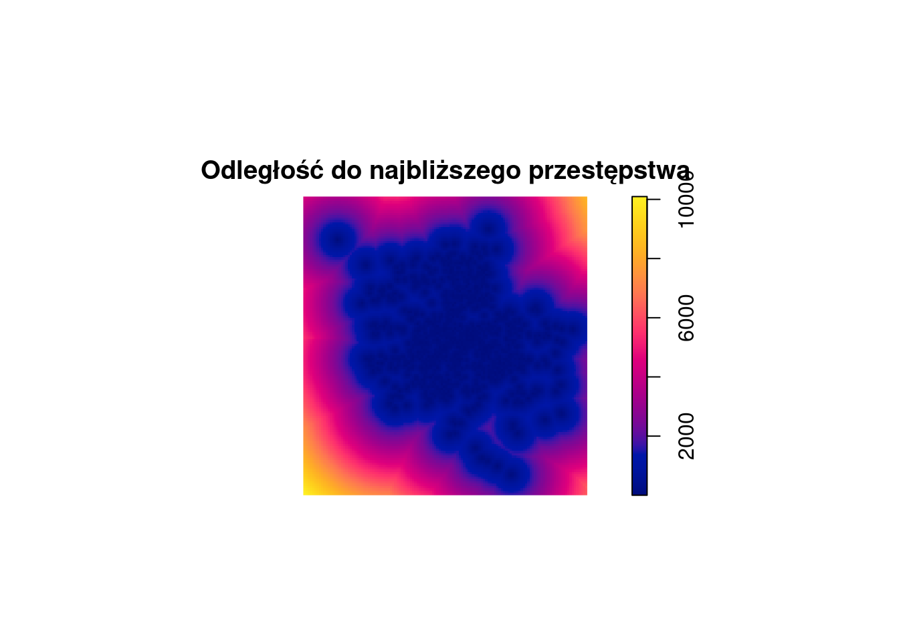
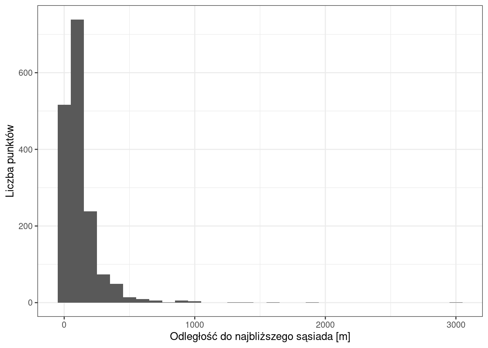
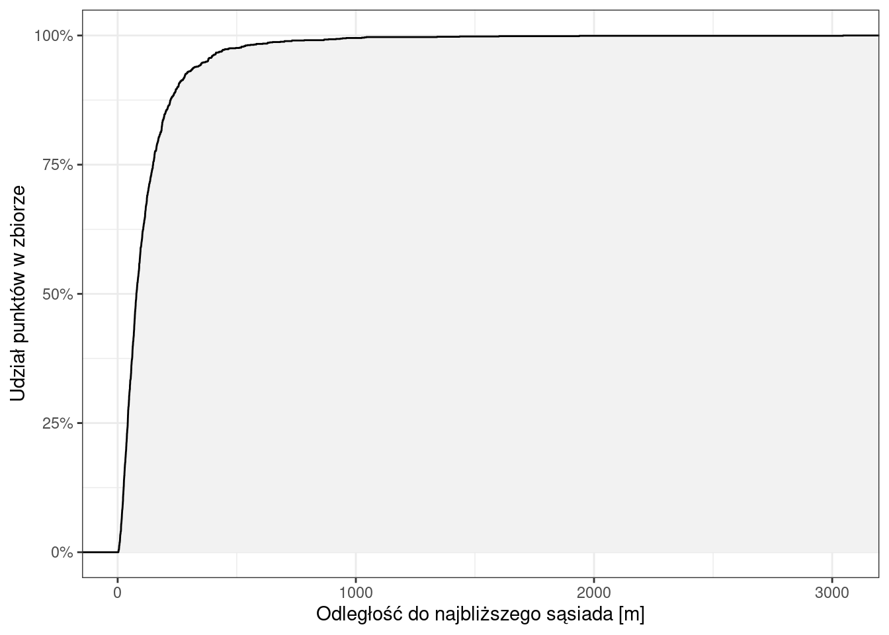
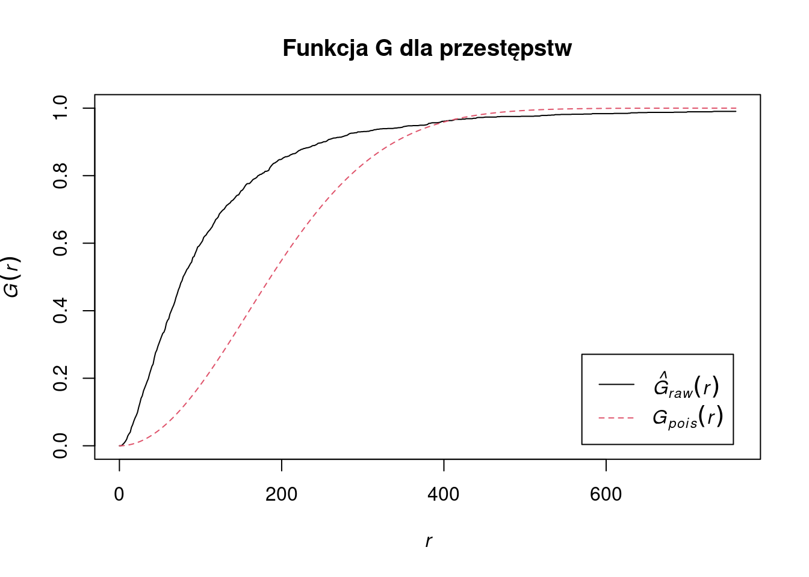
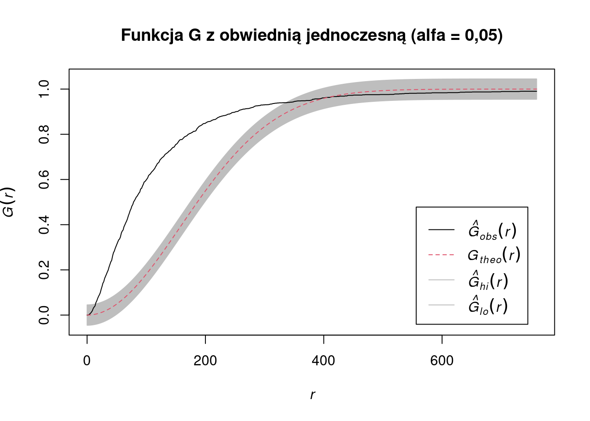
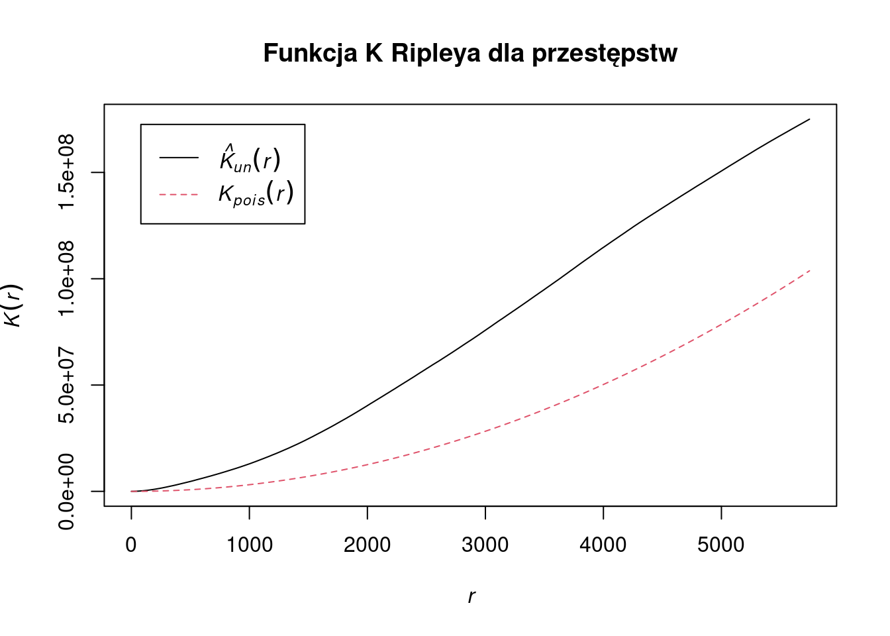
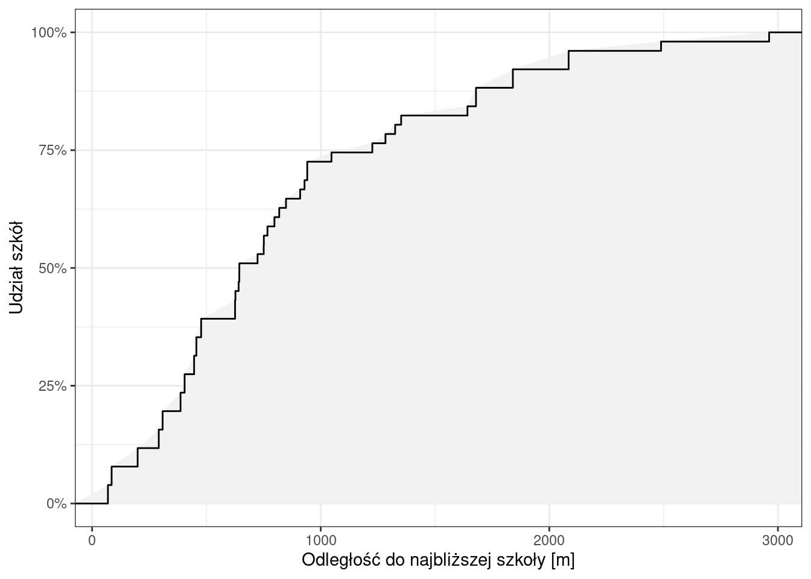
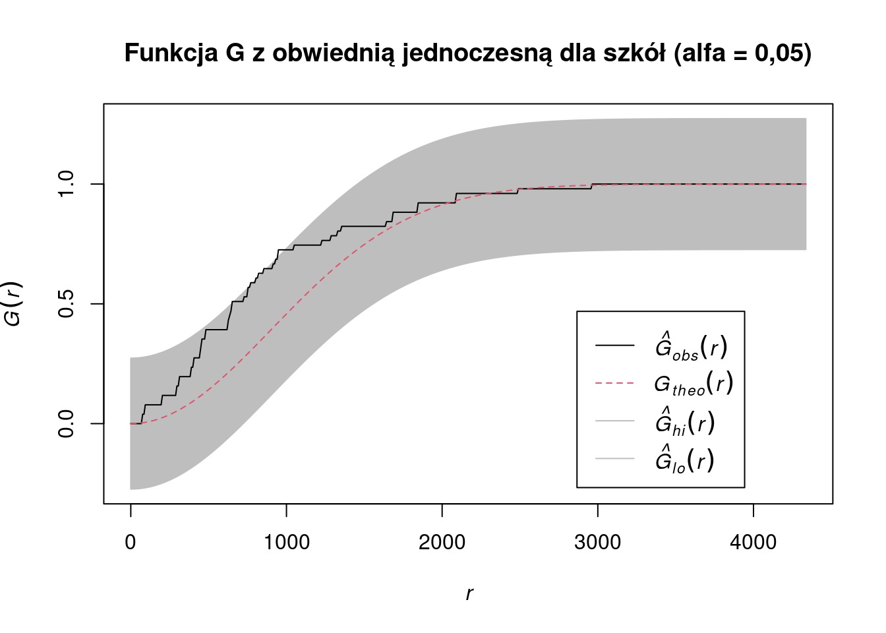

library(sf)
library(spatstat)
library(ggplot2)5 Metody oparte na odległości
Czego się nauczysz
Po tym rozdziale potrafisz wykonać w R:
- obliczyć odległości do najbliższego sąsiada i podsumować je statystykami opisowymi,
- przedstawić rozkład tych odległości na histogramie i na dystrybuancie,
- obliczyć wskaźnik Clarka-Evansa z korektą brzegową,
- przeprowadzić test Clarka-Evansa dla trzech różnych hipotez alternatywnych,
- wyznaczyć funkcję G i obwiednię oraz odczytać z nich wniosek.
Rozumiesz i umiesz zinterpretować:
- czym jest efekt brzegowy i dlaczego bez korekty wskaźnik Clarka-Evansa jest obciążony,
- różnicę między wartością wskaźnika a wynikiem testu,
- znaczenie argumentu
alternativei dlaczego dla jednej z hipotez wychodzi p = 1, - co oznacza położenie krzywej empirycznej względem teoretycznej i względem obwiedni, oraz w jakim zakresie odległości porównanie jest informacyjne,
- funkcję K Ripleya i jej związek z funkcją G,
- dlaczego metody odległościowe są najczulsze na to, jak zdefiniowano punkt.
Teoria: Najważniejsze informacje. Funkcje: Załącznik B.
5.1 Wprowadzenie
Metody oparte na intensywności (Rozdział 4) dzieliły obszar na fragmenty — oczka siatki albo ruchome okno — i pytały, ile punktów wypada na jednostkę powierzchni. Metody oparte na odległości podchodzą do rozkładu punktów z drugiej strony: pytają jak daleko od siebie leżą punkty, bez dzielenia obszaru na cokolwiek.
Ma to dwie konsekwencje. Pierwsza korzystna: wynik nie zależy od wyboru siatki ani szerokości pasma, czyli od decyzji, które w poprzednim rozdziale okazały się rozstrzygające. Druga — przeciwna: skoro metodą pomiaru jest odległość między punktami, to wszystko zależy od tego, co uznaliśmy za punkt. Dwa budynki tej samej szkoły oddalone o 50 m dają odległość 50 m, niezależnie od tego, że reprezentują jedną instytucję. Do tej czułości wracamy w interpretacji Przykładu 2.
Pojawia się tu także zagadnienie, którego w poprzednich rozdziałach nie było: efekt brzegowy. Punkt leżący blisko granicy obszaru badań może mieć swojego prawdziwego najbliższego sąsiada poza tym obszarem — a wtedy nie zostanie on uwzględniony i zapisana odległość będzie zawyżona. Wszystkie metody tego rozdziału wymagają decyzji, jak ten efekt uwzględnić.
5.2 Metody oparte na odległości w R
| Funkcja | Co zwraca |
|---|---|
spatstat::pairdist() |
macierz odległości między wszystkimi parami punktów |
spatstat::nndist() |
wektor odległości od każdego punktu do jego najbliższego sąsiada |
spatstat::distmap() |
raster odległości od każdej komórki do najbliższego punktu |
spatstat::clarkevans() |
wskaźnik Clarka-Evansa R — jedna liczba |
spatstat::clarkevans.test() |
test oparty na wskaźniku: wartość R oraz poziom istotności |
spatstat::Gest() |
funkcja G — dystrybuanta odległości do najbliższego sąsiada |
spatstat::Kest() |
funkcja K Ripleya |
spatstat::envelope() |
obwiednia dla funkcji G lub K |
Pełne zestawienie funkcji — Załącznik B.
5.3 Przykład 1: Przestępczość w Poznaniu
Dane
data/przestepstwa_2019.gpkg— lokalizacje przestępstw w Poznaniu w 2019 roku,data/out_poznan_szkoly.gpkg, warstwagranica— granica miasta; ta sama w obu przykładach oraz w Rozdział 3 i Rozdział 4.
p2019 = read_sf("data/przestepstwa_2019.gpkg")
granica = read_sf("data/out_poznan_szkoly.gpkg", layer = "granica")
p2019_ppp = as.ppp(st_geometry(p2019), W = as.owin(granica))
p2019_pppPlanar point pattern: 1661 points
window: polygonal boundary
enclosing rectangle: [345943.2, 368927.8] x [493660, 517878.9] unitsKrok 1: odległości między punktami
Pakiet spatstat udostępnia trzy funkcje odległości, różniące się tym, co zwracają.
Funkcja pairdist() zwraca pełną macierz odległości między wszystkimi parami punktów. Pierwszy wiersz zawiera odległości od punktu nr 1 do wszystkich pozostałych.
p2019_pair = pairdist(p2019_ppp)
p2019_pair[1:5, 1:5] [,1] [,2] [,3] [,4] [,5]
[1,] 0.0000 345.3003 2862.262 8306.265 412.9845
[2,] 345.3003 0.0000 2857.224 8607.106 389.4981
[3,] 2862.2616 2857.2245 0.000 7522.023 3215.6132
[4,] 8306.2651 8607.1061 7522.023 0.000 8662.6305
[5,] 412.9845 389.4981 3215.613 8662.631 0.0000Po posortowaniu pierwszego wiersza otrzymujemy ciąg zaczynający się od zera — odległość punktu od siebie samego. Druga wartość to odległość do najbliższego sąsiada.
sort(p2019_pair[1, ])[1:5][1] 0.00000 42.45441 59.10611 73.24603 137.13290Macierz dla 1661 punktów ma 2 758 921 elementów, więc przy większych zbiorach staje się niewygodna. Funkcja nndist() zwraca od razu to, co nas interesuje: wektor odległości do najbliższego sąsiada dla każdego punktu.
p2019_nn = nndist(p2019_ppp)
p2019_nn[1:5][1] 42.45441 32.89107 69.73521 56.48927 243.91727Funkcja distmap() zwraca co innego: raster, w którym każda komórka ma przypisaną odległość do najbliższego punktu zbioru. Nie służy do statystyk najbliższego sąsiada, ale dobrze pokazuje, gdzie w obszarze jest „pusto”.
plot(distmap(p2019_ppp), main = "Odległość do najbliższego przestępstwa")
Krok 2: statystyki najbliższego sąsiada
Wektor zwrócony przez nndist() podsumowujemy statystykami opisowymi — tak jak każdą inną zmienną ilościową (Rozdział 2).
summary(p2019_nn) Min. 1st Qu. Median Mean 3rd Qu. Max.
2.669 42.324 78.596 122.883 148.820 3045.719 round(quantile(p2019_nn, probs = seq(0, 1, 0.1))) 0% 10% 20% 30% 40% 50% 60% 70% 80% 90% 100%
3 22 36 48 64 79 100 128 171 251 3046 Rozkład tych odległości przedstawiamy na histogramie.
p2019_nn_df = data.frame(odleglosc = p2019_nn)
ggplot(p2019_nn_df, aes(x = odleglosc)) +
geom_histogram(binwidth = 100) +
labs(x = "Odległość do najbliższego sąsiada [m]", y = "Liczba punktów") +
theme_bw()
Wygodniejsza do odczytywania jest dystrybuanta (ang. cumulative distribution function): na osi poziomej odległość, na osi pionowej udział punktów, których najbliższy sąsiad leży nie dalej niż ta odległość.
ggplot(p2019_nn_df, aes(odleglosc)) +
stat_ecdf(aes(ymin = 0, ymax = after_stat(y)), geom = "ribbon", fill = "grey95") +
stat_ecdf() +
labs(x = "Odległość do najbliższego sąsiada [m]",
y = "Udział punktów w zbiorze") +
scale_y_continuous(labels = scales::percent) +
theme_bw()
Krok 3: wskaźnik Clarka-Evansa
Wskaźnik Clarka-Evansa R to stosunek obserwowanej średniej odległości do najbliższego sąsiada do wartości oczekiwanej przy rozmieszczeniu losowym o tej samej intensywności:
- R < 1 — punkty leżą bliżej siebie, niż wynikałoby z przypadku (skupienie),
- R = 1 — rozmieszczenie losowe,
- R > 1 — punkty leżą dalej od siebie, niż wynikałoby z przypadku (rozmieszczenie regularne); dla idealnej siatki heksagonalnej R = 2,15.
Przy obliczaniu wskaźnika trzeba zdecydować, jak uwzględnić efekt brzegowy. Bez korekty zapisane odległości są zawyżone — dla punktów przy granicy prawdziwy najbliższy sąsiad może leżeć poza obszarem badań i nie zostaje uwzględniony. Wskaźnik jest wtedy obciążony w górę, czyli przesunięty w stronę wniosku „regularny”.
clarkevans(p2019_ppp, correction = "none")[1] 0.6191933clarkevans(p2019_ppp, correction = "cdf")[1] 0.5616117
Którą korektę wybrać
Funkcja clarkevans() wywołana bez argumentu correction nie zwraca jednej liczby, lecz wektor z wszystkimi dostępnymi korektami. Pisanie clarkevans(x)[[1]] wybiera z niego pierwszy element, czyli wariant bez korekty — i jest to wybór przypadkowy, nie metodyczny.
Dostępne korekty to "none" (brak), "Donnelly" — tylko dla okien prostokątnych, więc dla granicy miasta niedostępna — oraz "cdf", oparta na dystrybuancie odległości. Funkcja clarkevans.test() domyślnie używa "cdf".
W tym rozdziale podajemy correction = "cdf" jawnie w obu funkcjach. Dzięki temu wskaźnik i test podają tę samą liczbę, a korekta jest wyborem świadomym.
Krok 4: test Clarka-Evansa
Sam wskaźnik mówi, w którą stronę odbiega rozmieszczenie od losowego, ale nie mówi, czy odbiega istotnie. Do tego służy clarkevans.test(). Hipoteza zerowa zakłada rozmieszczenie losowe; hipotezę alternatywną wskazuje argument alternative.
alternative |
Hipoteza alternatywna |
|---|---|
"two.sided" |
R ≠ 1 — rozmieszczenie nie jest losowe (skupione albo regularne) |
"clustered" (lub "less") |
R < 1 — rozmieszczenie skupione |
"regular" (lub "greater") |
R > 1 — rozmieszczenie regularne |
clarkevans.test(p2019_ppp, correction = "cdf", alternative = "two.sided")
Clark-Evans test
CDF correction
Z-test
data: p2019_ppp
R = 0.56161, p-value < 2.2e-16
alternative hypothesis: two-sidedclarkevans.test(p2019_ppp, correction = "cdf", alternative = "clustered")
Clark-Evans test
CDF correction
Z-test
data: p2019_ppp
R = 0.56161, p-value < 2.2e-16
alternative hypothesis: clustered (R < 1)clarkevans.test(p2019_ppp, correction = "cdf", alternative = "regular")
Clark-Evans test
CDF correction
Z-test
data: p2019_ppp
R = 0.56161, p-value = 1
alternative hypothesis: regular (R > 1)Krok 5: funkcja G
Funkcja G to dystrybuanta odległości do najbliższego sąsiada — ta sama krzywa, którą narysowaliśmy w kroku 2, ale zestawiona z krzywą teoretyczną wynikającą z rozmieszczenia losowego. Pozwala to porównać obserwacje z przypadkiem na każdej odległości osobno, a nie tylko przez jedną liczbę, jak wskaźnik Clarka-Evansa.
- \(\hat{G}\) powyżej \(G_{pois}\) — na danej odległości więcej punktów ma już swojego sąsiada, niż wynikałoby z przypadku, czyli punkty leżą bliżej siebie (skupienie),
- \(\hat{G}\) poniżej \(G_{pois}\) — punkty leżą dalej od siebie (rozmieszczenie regularne).
p2019_g = Gest(p2019_ppp, correction = "none")
plot(p2019_g, main = "Funkcja G dla przestępstw")
Krok 6: obwiednia
Porównanie krzywej empirycznej z teoretyczną mówi, w którą stronę odbiega rozmieszczenie, ale nie mówi, czy odchylenie jest większe od tego, co daje sama zmienność losowania. Krzywa teoretyczna opisuje bowiem wartość przeciętną przy rozmieszczeniu losowym, a pojedyncza realizacja takiego rozmieszczenia od tej przeciętnej odbiega.
Odpowiada na to obwiednia (ang. envelope), wyznaczana przez symulację. Stosujemy jej wariant jednoczesny (global = TRUE), który zgodnie z dokumentacją funkcji envelope() konstruowany jest tak: dla każdej z nsim symulacji rozmieszczenia losowego liczy się maksymalne odchylenie bezwzględne krzywej symulowanej od teoretycznej, bierze się nrank-tą największą z tych wartości (oznaczaną dcrit), a pas wyznacza się jako krzywa teoretyczna ± dcrit. Pas ma więc stałą szerokość na całym zakresie.
Test oparty na tym pasie odrzuca hipotezę o rozmieszczeniu losowym, jeśli krzywa empiryczna leży poza pasem przy którejkolwiek wartości r, i ma dokładny poziom istotności alpha = nrank/(1 + nsim). Przyjmujemy nsim = 99 i nrank = 5, czyli α = 5/100 = 0,05.
Ponieważ symulacja jest procedurą losową, przed nią ustawiamy set.seed() — bez tego pas byłby inny przy każdym uruchomieniu.
set.seed(2026)
p2019_env = envelope(p2019_ppp, Gest, nsim = 99, nrank = 5, global = TRUE,
funargs = list(correction = "none"))
plot(p2019_env, main = "Funkcja G z obwiednią jednoczesną (alfa = 0,05)")
Dolna granica pasa schodzi na części zakresu poniżej zera. Jest to konsekwencja konstrukcji „krzywa teoretyczna ± dcrit” przy stałej szerokości pasa, a nie wartość mająca znaczenie — funkcja G jest udziałem punktów, więc nie może być ujemna.
Dlaczego
global = TRUE, a nie obwiednia domyślna
Wywołana bez argumentu global, funkcja envelope() zwraca obwiednię punktową: dla każdej wartości r osobno bierze najmniejszą i największą wartość spośród symulacji. Dokumentacja funkcji stwierdza wprost, że obwiednie punktowe nie są przedziałami ufności dla funkcji, lecz wyznaczają punkty krytyczne testu Monte Carlo, który konstruuje się „przez wybór ustalonej wartości r i odrzucenie hipotezy zerowej, jeśli obserwowana wartość funkcji leży poza obwiednią przy tej wartości r”.
Czytanie obwiedni punktowej jako „krzywa wychodzi poza pas gdziekolwiek, więc odrzucamy” jest innym testem, który dokumentacja nazywa the „wrong” test i którego rzeczywisty poziom istotności można oszacować argumentem do.pwrong. Dla danych z tego rozdziału wynosi on 0,71 dla przestępstw i 0,86 dla szkół przy poziomie nominalnym 0,02 — czyli przy danych całkowicie losowych taki „test” wykryłby strukturę w większości przypadków.
Obwiednia jednoczesna jest zbudowana właśnie tak, aby wolno było czytać całą krzywę. Ten sam test można wykonać funkcją mad.test(), otrzymując wartość p.
Krok 7: funkcja K Ripleya
Funkcja K Ripleya odpowiada na pokrewne pytanie przy innej definicji sąsiedztwa. Funkcja G patrzy wyłącznie na najbliższego sąsiada, więc opisuje strukturę na małych odległościach. Funkcja K zlicza wszystkie punkty w otoczeniu o promieniu r, więc uwzględnia też sąsiadów dalszych i opisuje strukturę na wielu skalach jednocześnie.
p2019_k = Kest(p2019_ppp, correction = "none")
plot(p2019_k, main = "Funkcja K Ripleya dla przestępstw")
Interpretacja jest analogiczna: \(\hat{K}\) powyżej \(K_{pois}\) oznacza, że punkty są otoczone większą liczbą innych punktów, niż wynikałoby z przypadku. Obwiednię dla funkcji K wyznacza się tą samą funkcją envelope(), podając Kest zamiast Gest.
Interpretacja wyniku
Odległości do najbliższego sąsiada. Połowa przestępstw ma najbliższe inne przestępstwo w odległości nie większej niż 79 m, a 90% — nie większej niż 251 m. Średnia (123 m) jest wyraźnie wyższa od mediany, a maksimum wynosi 3046 m: rozkład jest silnie prawoskośny, bo pojedyncze przestępstwa na obrzeżach miasta leżą bardzo daleko od pozostałych. Dla takiego rozkładu medianą opisujemy typową odległość, nie średnią — tak samo jak w Rozdział 2.
Wskaźnik Clarka-Evansa. Z korektą cdf wskaźnik wynosi 0.562, czyli wyraźnie mniej niż 1 — przestępstwa leżą bliżej siebie, niż wynikałoby z rozmieszczenia losowego. Bez korekty otrzymalibyśmy 0.619, czyli wartość o 10.3% wyższą — obciążenie w stronę wniosku „regularny” jest tu całkiem wymierne.
Test. Dla hipotezy alternatywnej "two.sided" i "clustered" test daje p < 0,001, więc odrzucamy hipotezę o rozmieszczeniu losowym na rzecz skupienia. Dla "regular" wychodzi p = 1 — i nie jest to błąd. Hipoteza alternatywna brzmi wtedy „rozmieszczenie jest regularne”, a dane wskazują dokładnie przeciwnie, więc nie ma żadnych podstaw do jej przyjęcia. Wartość p = 1 oznacza: „to, co widzisz, jest najdalsze od tej hipotezy, jak to możliwe”.
Funkcja G. Krzywa empiryczna leży wyraźnie powyżej teoretycznej na małych i średnich odległościach — przy r = 100 m wynosi 0,60 wobec 0,18 teoretycznej, przy r = 250 m 0,90 wobec 0,71. Oznacza to, że punkty mają swoich sąsiadów znacznie bliżej, niż wynikałoby z przypadku.
Powyżej około 400 m krzywe się przecinają i empiryczna biegnie nieco poniżej teoretycznej. Nie jest to oznaka regularności — na tych odległościach obie krzywe zbliżają się już do 1 (przy r = 500 m: 0,98 wobec 0,99), bo prawie każdy punkt ma swojego najbliższego sąsiada bliżej. Porównanie przestaje tam nieść informację. Funkcję G czyta się na odległościach małych względem rozmiarów obszaru, nie na całym zakresie wykresu.
Obwiednia. Krzywa empiryczna wychodzi poza pas, więc odrzucamy hipotezę o rozmieszczeniu losowym na poziomie istotności 0,05. Przy r = 100 m krzywa przyjmuje wartość 0,60, podczas gdy górna granica pasa wynosi tam 0,22 — odchylenie jest zatem wielokrotnie większe niż to, które daje sama zmienność losowania.
Wniosek testu jest binarny: krzywa wychodzi poza pas, więc rozmieszczenie nie jest losowe. Obwiednia jednoczesna nie odpowiada natomiast na pytanie, przy jakich odległościach występuje odstępstwo — test dotyczy całej krzywej, a nie poszczególnych wartości r. Odczytywanie z pasa „skali, na której pojawia się skupienie” byłoby wnioskiem, którego ten test nie uprawnia.
Funkcja K. Krzywa empiryczna przebiega powyżej teoretycznej, co prowadzi do tego samego wniosku co funkcja G: punkty są otoczone większą liczbą innych punktów, niż wynikałoby z przypadku. Zgodność obu funkcji nie jest przypadkiem — opisują tę samą strukturę, tylko patrząc na nią przez inną definicję sąsiedztwa.
Wniosek. Wszystkie cztery narzędzia zgodnie wskazują skupienie: przestępstwa w Poznaniu nie są rozmieszczone losowo, lecz koncentrują się, i to na odległościach rzędu setek metrów. Jest to spójne z wynikami z Rozdział 4, gdzie test zliczania odrzucił hipotezę o stałej intensywności, oraz z Rozdział 3, gdzie odległość standardowa była znacznie mniejsza od promienia miasta.
5.4 Przykład 2: Szkoły podstawowe w Poznaniu
W tym przykładzie kod i wyniki są podane, natomiast interpretacji nie ma w tekście. Przeczytaj wyniki samodzielnie, odpowiedz na pytania zamieszczone na końcu przykładu, a następnie rozwiń bloki z odpowiedziami i sprawdź poprawność swojej interpretacji.
Dane
Warstwa szkoly zawiera 51 szkół podstawowych — po jednym punkcie na szkołę. Sposób jej przygotowania z warstwy budynków BDOT10k pokazuje Rozdział 3.
szkoly = read_sf("data/out_poznan_szkoly.gpkg", layer = "szkoly")
szkoly_ppp = as.ppp(st_geometry(szkoly), W = as.owin(granica))
npoints(szkoly_ppp)[1] 51Krok 1: statystyki najbliższego sąsiada
szkoly_nn = nndist(szkoly_ppp)
summary(szkoly_nn) Min. 1st Qu. Median Mean 3rd Qu. Max.
69.06 404.56 644.02 858.12 1136.34 2961.56 round(quantile(szkoly_nn, probs = seq(0, 1, 0.1))) 0% 10% 20% 30% 40% 50% 60% 70% 80% 90% 100%
69 199 387 446 625 644 798 941 1326 1841 2962 szkoly_nn_df = data.frame(odleglosc = szkoly_nn)
ggplot(szkoly_nn_df, aes(odleglosc)) +
stat_ecdf(aes(ymin = 0, ymax = after_stat(y)), geom = "ribbon", fill = "grey95") +
stat_ecdf() +
labs(x = "Odległość do najbliższej szkoły [m]", y = "Udział szkół") +
scale_y_continuous(labels = scales::percent) +
theme_bw()
Krok 2: wskaźnik i test Clarka-Evansa
clarkevans(szkoly_ppp, correction = "cdf")[1] 0.6498492clarkevans.test(szkoly_ppp, correction = "cdf", alternative = "clustered")
Clark-Evans test
CDF correction
Z-test
data: szkoly_ppp
R = 0.64985, p-value = 8.603e-07
alternative hypothesis: clustered (R < 1)Krok 3: funkcja G z obwiednią
set.seed(2026)
szkoly_env = envelope(szkoly_ppp, Gest, nsim = 99, nrank = 5, global = TRUE,
funargs = list(correction = "none"))
plot(szkoly_env, main = "Funkcja G z obwiednią jednoczesną dla szkół (alfa = 0,05)")
Pas obwiedni jednoczesnej ma stałą szerokość, więc unique() zwraca dla każdego zbioru jedną wartość. Pozwala to porównać oba zbiory jedną liczbą.
unique(round(szkoly_env$hi - szkoly_env$lo, 3))[1] 0.546unique(round(p2019_env$hi - p2019_env$lo, 3))[1] 0.09Sprawdź swoją interpretację
Pytanie 1. Mediana odległości do najbliższej szkoły wynosi 644 m, a minimum 69 m. Na wykresie funkcji G krzywa empiryczna jest równa zeru aż do około 70 m. Dlaczego?
Sprawdź odpowiedź
Ponieważ funkcja G to dystrybuanta odległości do najbliższego sąsiada, a żadna szkoła nie ma innej szkoły bliżej niż 69 m. Dla odległości mniejszych od tego minimum udział szkół mających sąsiada w takim zasięgu wynosi dokładnie zero, więc krzywa leży na osi.
Nie jest to artefakt obliczeń, lecz realna cecha danych: szkoły podstawowe nie stoją obok siebie, bo każda obsługuje swój obwód. W zbiorze przestępstw minimum wynosiło 3 m i krzywa G rośnie od samego początku.
Pytanie 2. Wskaźnik Clarka-Evansa dla szkół wynosi 0.65, a dla przestępstw 0.562. Oba są mniejsze od 1. Czy to znaczy, że oba zjawiska są skupione w tym samym sensie?
Sprawdź odpowiedź
Oba wskaźniki są mniejsze od 1, więc w obu przypadkach punkty leżą bliżej siebie, niż wynikałoby z rozmieszczenia losowego — i w obu test to potwierdza. Ale skala i siła zjawiska są różne.
Dla przestępstw wskaźnik wynosi 0.562, a typowa odległość do najbliższego sąsiada 79 m. Dla szkół wskaźnik jest bliższy jedności (0.65), a typowa odległość 644 m — czyli ponad 8 razy większa.
Przestępstwa tworzą ciasne ogniska na przestrzeni kilkudziesięciu metrów. Szkoły są rozłożone po całym mieście i ich „skupienie” polega na tym, że jest ich więcej w gęściej zaludnionych częściach miasta — czyli na nierównomierności w skali kilometrów, nie metrów. Sam wskaźnik Clarka-Evansa tej różnicy nie pokazuje; pokazuje ją dopiero funkcja G (pytanie 3) oraz typowa odległość.
Pytanie 3. Pas obwiedni dla szkół ma szerokość 0.546, a dla przestępstw 0.09 — czyli jest ponad sześciokrotnie szerszy. Skąd ta różnica i co z niej wynika?
Sprawdź odpowiedź
Szerokość pasa to podwojona wartość dcrit, czyli nrank-te największe maksymalne odchylenie krzywych symulowanych od teoretycznej. Zależy więc wyłącznie od tego, jak bardzo krzywe symulowane różnią się między sobą — a przy 51 punktach różnią się znacznie bardziej niż przy 1661. Każda z 51 szkół to około 2% zbioru, więc przesunięcie kilku punktów wyraźnie zmienia całą krzywą; przy ponad tysiącu punktów taki wpływ jest znikomy.
Konsekwencja jest praktyczna: przy małej liczbie punktów trzeba znacznie większego odstępstwa, żeby je wykryć. Krzywa dla szkół wychodzi poza pas, więc hipotezę o losowości odrzucamy również tutaj — ale wychodzi niewiele i na krótkim odcinku, podczas gdy dla przestępstw przekracza pas wielokrotnie. Ten sam wniosek („rozmieszczenie nie jest losowe”) opiera się więc na dowodzie o bardzo różnej sile.
Jest to ta sama zależność, co przy elipsie odchylenia standardowego w Rozdział 3 i przy wykresie pudełkowym w Rozdział 2: wynik wyliczony z kilkudziesięciu obserwacji trzeba czytać razem z ich liczbą.
Pytanie 4. Dane zawierają 51 szkół, powstałych ze scalenia 84 budynków. Gdyby analizę wykonać na centroidach budynków, mediana odległości do najbliższego sąsiada wyniosłaby 54 m, a wskaźnik Clarka-Evansa 0,39. Dlaczego ta różnica jest tak duża i dlaczego nie ujawniła się w Rozdział 3?
Sprawdź odpowiedź
Bo metody oparte na odległości mierzą odległości między punktami, a odległości między budynkami tej samej szkoły to kilkadziesiąt metrów. Przy 84 centroidach budynków 62% punktów miałoby sąsiada bliżej niż 100 m — i to te odległości zdominowałyby wynik. Mediana 644 m spadłaby do 54 m, a wskaźnik z 0.65 do 0,39, czyli pozornie w stronę silnego skupienia.
W Rozdział 3 ta sama zmiana przesunęła odległość standardową o 0,4% (4206 wobec 4188 m). Statystyki centrograficzne opisują bowiem rozproszenie całego zbioru wokół jego środka — dodanie kilku punktów obok już istniejących prawie go nie zmienia.
Ogólna zasada: im metoda bardziej opiera się na odległościach lokalnych, tym bardziej jest czuła na definicję punktu. Statystyki centrograficzne są odporne, metody intensywnościowe średnio czułe, metody odległościowe najczulsze. Przed analizą odległościową zawsze sprawdzamy, czy jeden obiekt rzeczywistości odpowiada jednemu punktowi w danych — najprościej przez summary(nndist(x)): mediana znacznie mniejsza od średniej jest sygnałem ostrzegawczym.
5.5 Pytania kontrolne
1. Czym różnią się funkcje
pairdist(),nndist()idistmap()?
Sprawdź odpowiedź
pairdist() zwraca macierz odległości między wszystkimi parami punktów — dla n punktów jest to n² wartości, więc przy dużych zbiorach staje się niewygodna.
nndist() zwraca wektor odległości od każdego punktu do jego najbliższego sąsiada — to na nim opierają się statystyki najbliższego sąsiada i funkcja G.
distmap() zwraca raster, w którym każda komórka ma odległość do najbliższego punktu zbioru. Nie służy do statystyk, ale pokazuje, gdzie w obszarze punktów nie ma.
2. Czym jest efekt brzegowy i w którą stronę obciąża wskaźnik Clarka-Evansa?
Sprawdź odpowiedź
Punkt leżący blisko granicy obszaru badań może mieć swojego prawdziwego najbliższego sąsiada poza tym obszarem. Sąsiad ten nie znajduje się w zbiorze danych, więc zapisana odległość jest zawyżona.
Wskaźnik Clarka-Evansa to iloraz obserwowanej średniej odległości do oczekiwanej, więc zawyżenie licznika zawyża wskaźnik — obciążenie idzie w górę, czyli w stronę wniosku „rozmieszczenie regularne”. Dla przestępstw w Poznaniu wskaźnik bez korekty wynosi 0.619 wobec 0.562 z korektą.
3. Dlaczego
clarkevans(x)[[1]]jest złym sposobem odczytania wskaźnika?
Sprawdź odpowiedź
Ponieważ clarkevans() wywołana bez argumentu correction zwraca wektor wszystkich dostępnych korekt, a [[1]] wybiera z niego pierwszy element, czyli wariant bez korekty. Jest to wybór przypadkowy — wynika z kolejności w wektorze, nie z decyzji metodycznej. Dodatkowo clarkevans.test() domyślnie używa korekty "cdf", więc wskaźnik i test podawałyby różne liczby dla tych samych danych.
Poprawnie podaje się korektę jawnie, w obu funkcjach: correction = "cdf".
4. Test Clarka-Evansa z
alternative = "regular"dał p = 1. Czy to błąd?
Sprawdź odpowiedź
Nie. Hipoteza alternatywna brzmi wtedy „rozmieszczenie jest regularne” (R > 1), a dane wskazują dokładnie przeciwnie — wskaźnik wynosi 0.562, czyli znacznie poniżej 1. Wartość p = 1 oznacza, że nie ma żadnych podstaw do przyjęcia tej hipotezy alternatywnej.
Lekcja ogólna: hipotezę alternatywną wybiera się przed analizą, na podstawie pytania badawczego. Wykonanie testu dla wszystkich trzech wariantów i wybranie tego z najmniejszą wartością p nie jest testowaniem hipotezy.
5. Co oznacza położenie krzywej empirycznej funkcji G powyżej krzywej teoretycznej?
Sprawdź odpowiedź
Że na danej odległości więcej punktów ma już swojego najbliższego sąsiada, niż wynikałoby z rozmieszczenia losowego — czyli punkty leżą bliżej siebie. Jest to oznaka skupienia. Położenie poniżej krzywej teoretycznej oznaczałoby, że punkty leżą dalej od siebie, czyli rozmieszczenie regularne.
Zastrzeżenie: porównanie jest informacyjne na odległościach małych względem rozmiarów obszaru. Na dużych odległościach obie krzywe zbliżają się do 1, bo prawie każdy punkt ma już sąsiada bliżej, i ich wzajemne położenie przestaje coś znaczyć.
6. Po co obwiednia, jeśli mamy już porównanie z krzywą teoretyczną?
Sprawdź odpowiedź
Krzywa teoretyczna mówi, jaka byłaby funkcja G przeciętnie przy rozmieszczeniu losowym. Nie mówi natomiast, jak bardzo pojedyncza realizacja takiego rozmieszczenia może od tej przeciętnej odbiegać. Niewielkie odchylenie krzywej empirycznej może więc być zupełnie zwykłą zmiennością losowania.
Obwiednia odpowiada na to pytanie: powstaje z symulacji rozmieszczenia losowego w tym samym obszarze i wyznacza pas, w którym krzywa powinna się mieścić, jeśli rozmieszczenie jest losowe. Dopiero wyjście poza pas jest przesłanką odstępstwa od losowości.
Obwiednia nie mówi natomiast, przy jakich odległościach odstępstwo występuje — wniosek testu jest binarny i dotyczy całej krzywej.
7. Czym różni się obwiednia punktowa od jednoczesnej i dlaczego używamy
global = TRUE?
Sprawdź odpowiedź
Obwiednia punktowa (wariant domyślny) bierze dla każdej wartości r osobno najmniejszą i największą wartość spośród symulacji. Zgodnie z dokumentacją funkcji envelope() wyznacza ona punkty krytyczne testu Monte Carlo, który konstruuje się przez wybór ustalonej wartości r i odrzucenie hipotezy, jeśli obserwowana wartość leży poza obwiednią przy tej jednej wartości.
Obwiednia jednoczesna (global = TRUE) ma stałą szerokość, wyznaczoną z maksymalnych odchyleń krzywych symulowanych od teoretycznej. Pozwala odrzucić hipotezę, jeśli krzywa leży poza pasem przy którejkolwiek wartości r — a więc wolno ją czytać jako całość.
Używamy jej dlatego, że naturalne wzrokowe czytanie wykresu („czy krzywa mieści się w pasie?“) jest poprawne tylko dla wariantu jednoczesnego. Zastosowanie tego czytania do obwiedni punktowej daje test, którego rzeczywisty poziom istotności jest wielokrotnie wyższy od nominalnego — dla danych z tego rozdziału 0,71 i 0,86 przy nominalnym 0,02.
8. Czym różni się funkcja K Ripleya od funkcji G?
Sprawdź odpowiedź
Definicją sąsiedztwa. Funkcja G patrzy wyłącznie na najbliższego sąsiada każdego punktu, więc opisuje strukturę na najmniejszych odległościach. Funkcja K zlicza wszystkie punkty w otoczeniu o promieniu r, więc uwzględnia także sąsiadów dalszych i opisuje strukturę na wielu skalach jednocześnie.
Dla przestępstw w Poznaniu obie prowadzą do tego samego wniosku o skupieniu — opisują tę samą strukturę, tylko z innej strony. Rozbieżność między nimi byłaby informacją samą w sobie: oznaczałaby, że struktura na najmniejszych odległościach jest inna niż na większych.
5.6 Podsumowanie
| Metoda | Funkcja | Co mówi o danych | Warunek poprawnego odczytu |
|---|---|---|---|
| statystyki najbliższego sąsiada | nndist() + summary() |
typowa odległość między punktami i rozkład tych odległości | opis bez testu — istotność dają clarkevans.test() i obwiednia |
| wskaźnik Clarka-Evansa | clarkevans(correction = "cdf") |
w którą stronę i jak silnie rozmieszczenie odbiega od losowego | jedna liczba dla wszystkich skal; korektę podajemy jawnie |
| test Clarka-Evansa | clarkevans.test() |
czy odstępstwo od losowości jest istotne | wniosek dotyczy całego obszaru; skalę pokazuje funkcja G |
| funkcja G | Gest() |
jak rozmieszczenie odbiega od losowego na każdej odległości | czytana na odległościach małych względem obszaru; istotność daje obwiednia |
| obwiednia jednoczesna | envelope(global = TRUE) |
czy odstępstwo od losowości przekracza zmienność losowania; poziom istotności nrank/(1 + nsim) |
wniosek dotyczy całej krzywej łącznie; wymaga set.seed() |
| funkcja K Ripleya | Kest() |
to samo co G, ale z uwzględnieniem dalszych sąsiadów | czytana tak samo jak funkcja G |
Trzy zasady, do których wracamy w kolejnych rozdziałach:
- Korektę brzegową wybiera się świadomie. Bez korekty wskaźnik Clarka-Evansa jest obciążony w stronę „regularny”. Podajemy
correctionjawnie, nie bierzemy[[1]]. - Hipotezę alternatywną wybiera się przed analizą. Wykonanie testu dla wszystkich wariantów i wybranie najmniejszej wartości p nie jest testowaniem hipotezy.
- Metody odległościowe są najczulsze na definicję punktu. Przed analizą sprawdzamy, czy jeden obiekt rzeczywistości odpowiada jednemu punktowi w danych. Mediana odległości znacznie mniejsza od średniej jest sygnałem ostrzegawczym.
- Obwiednię czytamy tak, jak została zbudowana. Wariant domyślny (punktowy) jest testem przy jednej, z góry ustalonej odległości; całą krzywą wolno oceniać tylko przy
global = TRUE.
5.7 Trzy grupy metod analizy rozkładu punktów
Metody z tego rozdziału odpowiadają na pytanie, czy i na jakiej odległości rozmieszczenie punktów odbiega od losowego. Pytanie gdzie należy do metod opartych na intensywności.
Wskaźnik Clarka-Evansa jest jedną liczbą dla całego obszaru. Funkcja G i obwiednia opisują strukturę jako funkcję odległości, również dla całego obszaru łącznie. Położenie miejsc zagęszczonych wskazują metody z Rozdział 4: mapa gęstości jądra pokazuje ogniska, a test zliczania w kwadratach — które części obszaru odbiegają od wartości oczekiwanej.
Trzy grupy metod uzupełniają się więc, a nie zastępują:
| Pytanie | Grupa metod | Rozdział |
|---|---|---|
| Gdzie leży środek zbioru i jak szerokie jest rozproszenie? | statystyki centrograficzne | Rozdział 3 |
| Gdzie punktów jest więcej, a gdzie mniej? | metody oparte na intensywności | Rozdział 4 |
| Czy i na jakiej odległości rozmieszczenie odbiega od losowego? | metody oparte na odległości | ten rozdział |
Pytanie dlaczego należy do osobnej grupy zagadnień: wyjaśnienie wymaga odniesienia rozkładu punktów do innych zmiennych, czym zajmuje się analiza danych obszarowych (Rozdział 7) oraz modelowanie przestrzenne.
5.8 Pełny kod analizy
Poniżej zebrany jest cały kod obu przykładów, w kolejności wykonania — do skopiowania do własnego skryptu zamiast przeklejania pojedynczych fragmentów. Nie ma w nim kodu objaśniającego: to dokładnie ta ścieżka, która prowadzi od danych wejściowych do wyniku. Przykład 2 korzysta z obiektów utworzonych w Przykładzie 1, więc kod uruchamia się w całości, od początku.
library(sf)
library(spatstat)
library(ggplot2)
p2019 = read_sf("data/przestepstwa_2019.gpkg")
granica = read_sf("data/out_poznan_szkoly.gpkg", layer = "granica")
p2019_ppp = as.ppp(st_geometry(p2019), W = as.owin(granica))
p2019_ppp
p2019_pair = pairdist(p2019_ppp)
p2019_pair[1:5, 1:5]
sort(p2019_pair[1, ])[1:5]
p2019_nn = nndist(p2019_ppp)
p2019_nn[1:5]
plot(distmap(p2019_ppp), main = "Odległość do najbliższego przestępstwa")
summary(p2019_nn)
round(quantile(p2019_nn, probs = seq(0, 1, 0.1)))
p2019_nn_df = data.frame(odleglosc = p2019_nn)
ggplot(p2019_nn_df, aes(x = odleglosc)) +
geom_histogram(binwidth = 100) +
labs(x = "Odległość do najbliższego sąsiada [m]", y = "Liczba punktów") +
theme_bw()
ggplot(p2019_nn_df, aes(odleglosc)) +
stat_ecdf(aes(ymin = 0, ymax = after_stat(y)), geom = "ribbon", fill = "grey95") +
stat_ecdf() +
labs(x = "Odległość do najbliższego sąsiada [m]",
y = "Udział punktów w zbiorze") +
scale_y_continuous(labels = scales::percent) +
theme_bw()
clarkevans(p2019_ppp, correction = "none")
clarkevans(p2019_ppp, correction = "cdf")
clarkevans.test(p2019_ppp, correction = "cdf", alternative = "two.sided")
clarkevans.test(p2019_ppp, correction = "cdf", alternative = "clustered")
clarkevans.test(p2019_ppp, correction = "cdf", alternative = "regular")
p2019_g = Gest(p2019_ppp, correction = "none")
plot(p2019_g, main = "Funkcja G dla przestępstw")
set.seed(2026)
p2019_env = envelope(p2019_ppp, Gest, nsim = 99, nrank = 5, global = TRUE,
funargs = list(correction = "none"))
plot(p2019_env, main = "Funkcja G z obwiednią jednoczesną (alfa = 0,05)")
p2019_k = Kest(p2019_ppp, correction = "none")
plot(p2019_k, main = "Funkcja K Ripleya dla przestępstw")
szkoly = read_sf("data/out_poznan_szkoly.gpkg", layer = "szkoly")
szkoly_ppp = as.ppp(st_geometry(szkoly), W = as.owin(granica))
npoints(szkoly_ppp)
szkoly_nn = nndist(szkoly_ppp)
summary(szkoly_nn)
round(quantile(szkoly_nn, probs = seq(0, 1, 0.1)))
szkoly_nn_df = data.frame(odleglosc = szkoly_nn)
ggplot(szkoly_nn_df, aes(odleglosc)) +
stat_ecdf(aes(ymin = 0, ymax = after_stat(y)), geom = "ribbon", fill = "grey95") +
stat_ecdf() +
labs(x = "Odległość do najbliższej szkoły [m]", y = "Udział szkół") +
scale_y_continuous(labels = scales::percent) +
theme_bw()
clarkevans(szkoly_ppp, correction = "cdf")
clarkevans.test(szkoly_ppp, correction = "cdf", alternative = "clustered")
set.seed(2026)
szkoly_env = envelope(szkoly_ppp, Gest, nsim = 99, nrank = 5, global = TRUE,
funargs = list(correction = "none"))
plot(szkoly_env, main = "Funkcja G z obwiednią jednoczesną dla szkół (alfa = 0,05)")
unique(round(szkoly_env$hi - szkoly_env$lo, 3))
unique(round(p2019_env$hi - p2019_env$lo, 3))